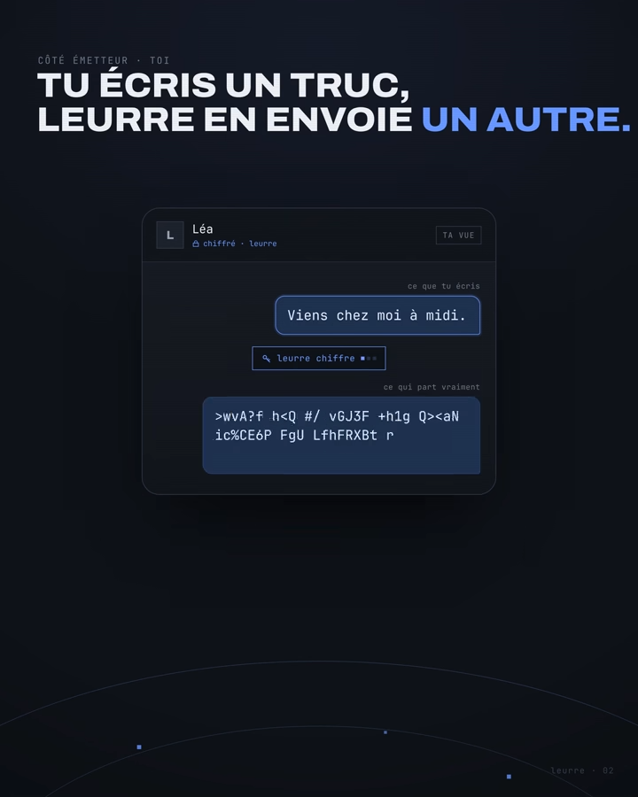

Projet RED - AUBEFER
Jeu de rôle au tour par tour dans le terminal, codé en Go à trois pour le Projet RED d'Ynov.
Voir le projet
Jeu de rôle au tour par tour dans le terminal, codé en Go à trois pour le Projet RED d'Ynov.
Voir le projet
Agents IA qui assurent le travail de bureau d'une Responsable Qualité dans un laboratoire accrédité : mails, documents, métrologie, audits. Utilisé au quotidien.
Voir le projet
Outil de chiffrement desktop pour Windows. Chiffrement authentifié, dérivation de clé par passphrase ou clé USB, couche de camouflage stéganographique. 100% local, zéro réseau.
Voir le projet